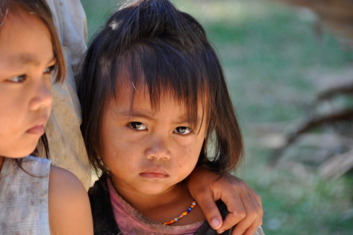
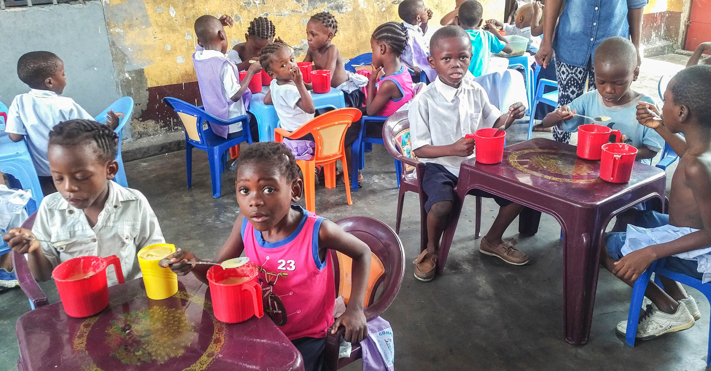
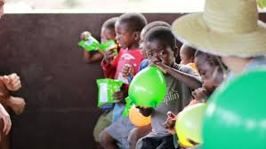

Children at an early age often demonstrate a delay in emotional, social, physical development, and also are at greater risk of contracting diseases.
Not all children are treated equally in orphanages. Some children are exposed to risk factors, lack of nutrition, stress, and exposure to toxic substances. Children who are sickly are more challenging to care for that’s why they are usually ignored by staff. If a child responds easily when spoken to or touched, the caregiver gets some satisfaction from that response.
A quality of life is not usually experienced by children in orphanages. Children need to be healthy and happy to be fully functioning adults. The relationships between adults and children are usually superficial and brief, with little warmth and affection. Staff in orphanages do not connect emotionally or physically with children in the same way that families connect with children.
